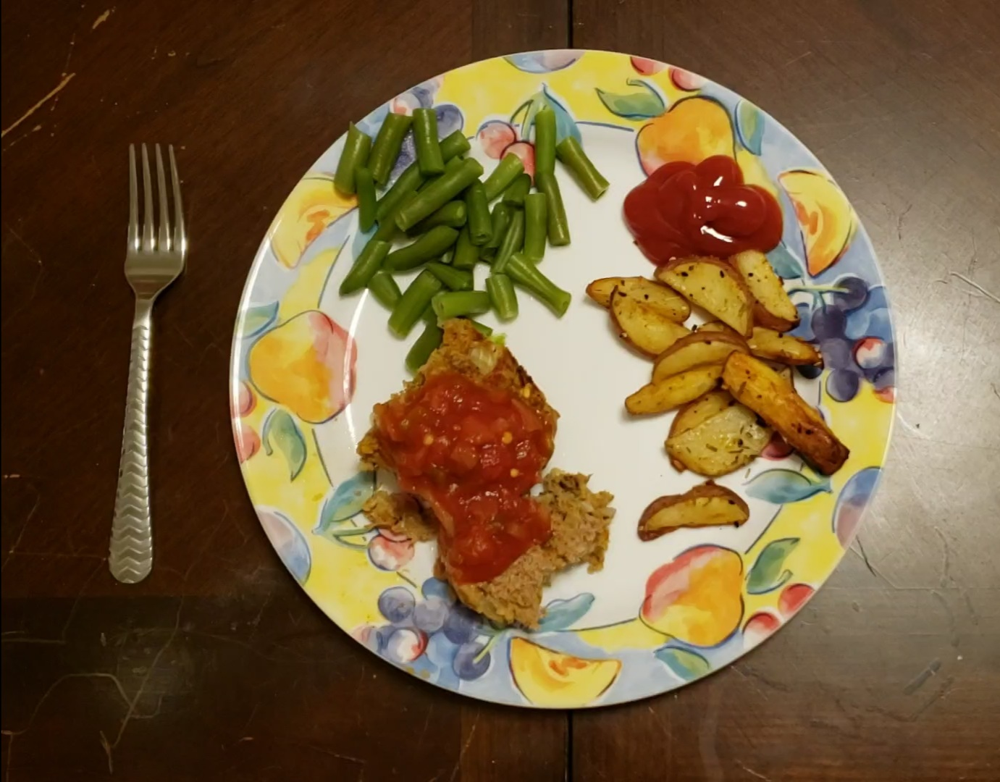
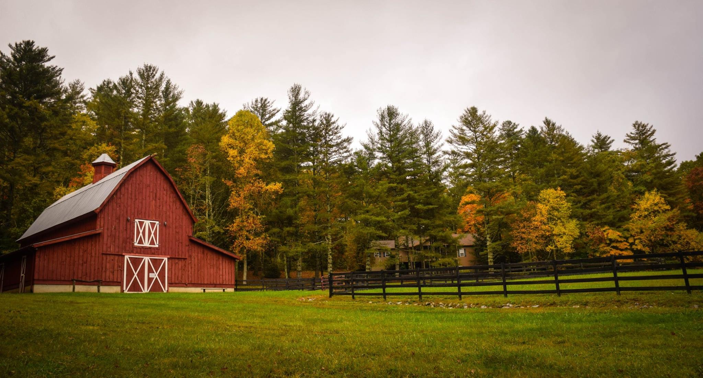

Gaming during COVID-19
This amazing podcast discusses how the Orcas group have kept busy with video games during COVID.

How to Make: Turkey Meatloaf
Learn how to make an easy and delicious meal.

Feeding America: Southwest Virginia
If you would like to help those in need make meals themselves, please look into making a difference.